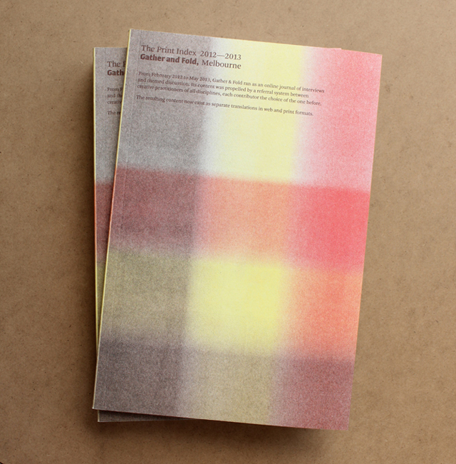
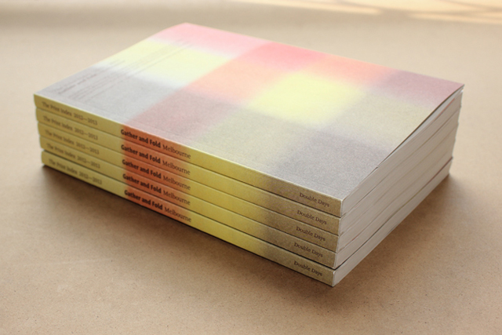
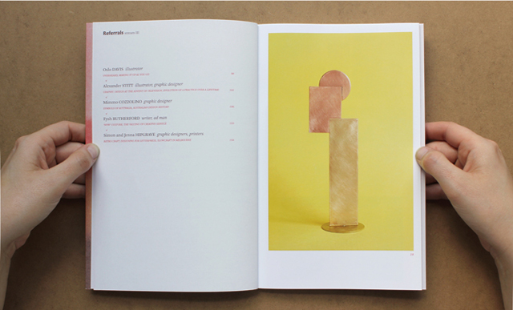
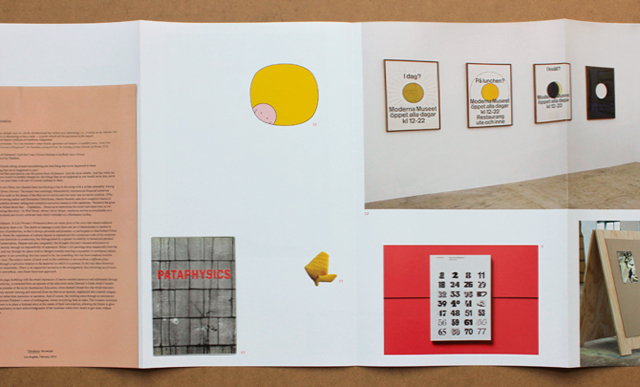
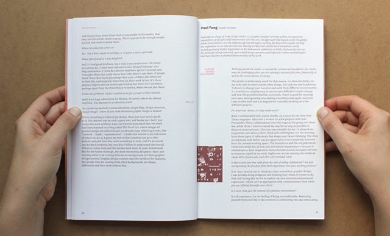
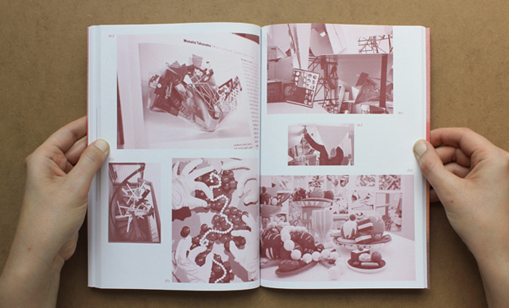

Bonnie Abbott
With a background in publication design, Bonnie's interest shifted to the designer-as-author model in 2011, writing with publications such as MADE Quarterly, Process Journal and Creative Review, and leading to the formation of Double Days and its experimental publishing projects.
Bonnie worked as role of editor at Australia's oldest design publication Desktop from 2013—2015, and has presented talks and workshops on self-publishing, adaptive design processes, and content-driven design. She wrote and taught RMIT's 'Design Infidelity' studio in 2015, and currently works as Creative Lead at In Common.
Aimee Jay
Having built her experience in web, animation and motion graphics, Aimee's skills in interactive design was always characterised by her interest in community, communication and social good. Co-founding Double Days in 2011, Aimee's work with Gather & Fold and Designers Who were built to challenge digital norms and notions of online publishing.
Aimee is currently working as a senior digital designer at D3R, and conducting reseach into distrubution and communication tools within disaster-striken communities.
Bonnie and Aimee have come together as Double Days to combine blogging, multi-disciplinary design explorations and visual response. Publishing online design journal Gather & Fold, social posters, zines and design reportage, the aim of Double Days is to inquire into and explore traditional visual communication within our modern digital environment.
Buy the book






The Print Index 2012—2013 Gather & Fold, Melbourne
Double Day's online journal, Gather & Fold, has been put to print! This was a project completed in dedication to the local creative community, here to mark our contemporary history, a cross-section of our connections, friendships and mutual admirations. It is a wonderful feeling to hold in our hands the result of so many months of work. After all, there's nothing quite like print.
Produced in a limited run of 400, "The Print Index" is a translative project that Bonnie Abbott describes as: "...a book acknowledging certain things about books. The efficiency of the page and the bookshelves that keep them. Their implied linearity, the finality of print, the natural dilution of context with age... It was also a reaction. If the content was to hold its time unchanged, it had to be in print. The Gather & Fold website will update, or evolve, or eventually come down. It can change because it is mine. But the book is here so it can belong to you."
With 24 contributors, the book features a lengthy "Tumblr" foldout, 120 pages of interviews and a cover produced with Xavier Connelly of Dawn Press.
Please email for enquires. 300 copies will be available for sale through Gather & Fold from 15th June.